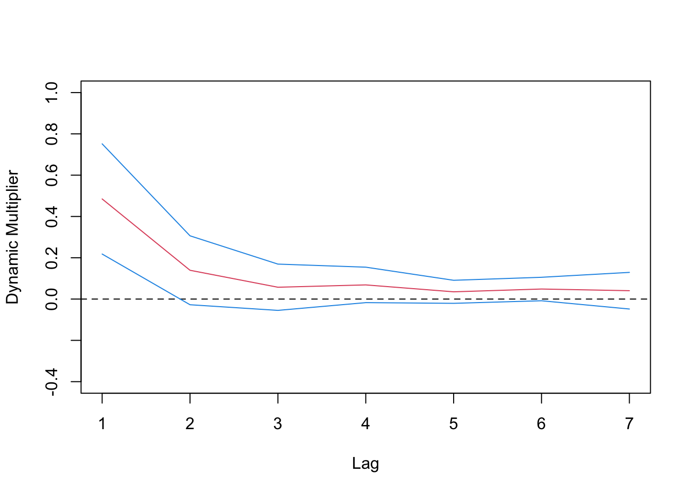
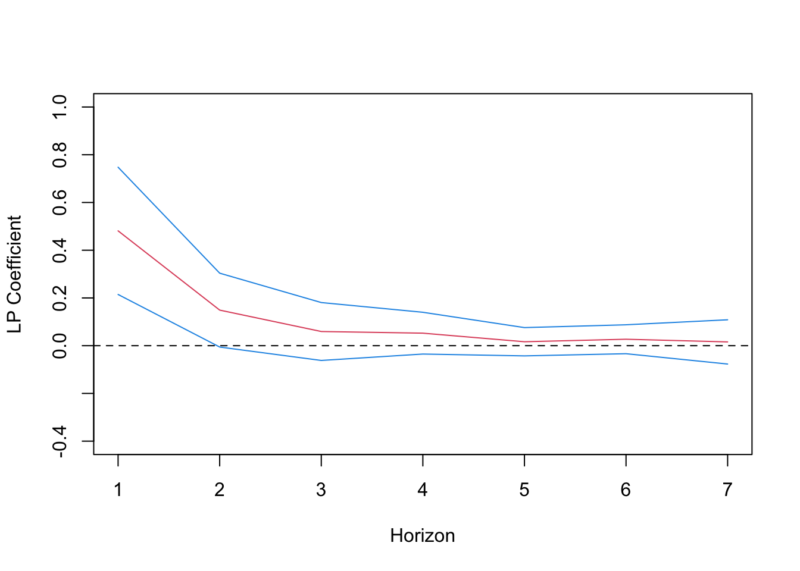
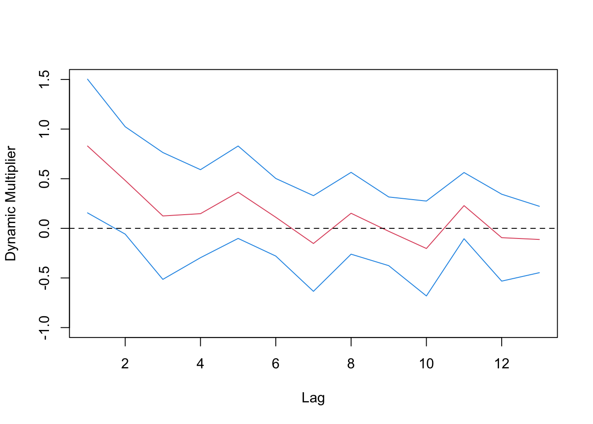

This section will cover the specifications commonly used to estimate dynamic causal effect. Just like in cross-sectional analysis, regression techniques can always be applied as long as the time series are covariance stationary without an emphasis on causality. However, we pay special attention to causal inferences, as we are more interested in understanding the causality rather than mere correlations in most empirical researches. We start with the case where the structural shock is directly observed and move on to the cases where the structural shocks need to be constructed.
16.1 Distributed Lags
The easiest approach to estimate dynamic causal effect is to include lags in the specification:
where \(\epsilon_t\) is the structural shock, \(u_t\) is everything that otherwise influences \(y_t\). Since \(\epsilon_t\) happens randomly, we have \(\mathbb E(u_t |\epsilon_{t-j}) = 0\). Thus, the \(\beta\)s, which capture the dynamic causal effect, would be consistently estimated by OLS.
Note that we call it a specification, in a sense that the joint distribution of the random variables is unknown, which distinguishes itself from the DGP model in Chapter 6. But it does not stop us from uncovering the causal effect, as long as the exogenous condition holds.
The effect of a unit change in \(\epsilon\) on \(y\) after \(h\) periods, which is \(\beta_{h}\), is also called the \(h\)-period dynamic multiplier. Sometimes, we are interested in the accumulated effect over time, \(\beta_0+\beta_1+\cdots+\beta_h\), which is called cumulative dynamic multiplier.
Because \(u_t\) is the linear combination of all other current and past shocks, it is likely serially correlated. So HAC standard errors are required for robust inferences.
Proposition 16.1 Assumptions for a consistent estimation of dynamic causal effects with distributed lag models:
\(\epsilon\) is an exogenous shock, \(\mathbb E(u_t|\epsilon_t,\epsilon_{t-1},...)=0\);
All variables are stationary;
Regular conditions for OLS to work.
To reduce the serial correlations \(\{u_t\}\), and also allow for slow adjustment of \(y_t\), we can also include lagged dependent variables in the specification, which becomes an autoregressive distributed lag (ADL) specification:
When lags of the dependent variable are included as regressors, strict exogeneity fails for sure, because \(X=\{y_{t-1},\dots,\epsilon_t, \epsilon_{t-1},\dots\}\) is correlated with past errors \(u_{t-1}\), despite it is uncorrelated with the contemporary error \(u_t\). The OLS is consistent so long as \(\{u_t\}\) are not serially correlated. Otherwise, \(u_t\) would be correlated with \(X\) through \(u_{t-1}\). The serial correlation can be tested with Durbin-Watson test or Breusch-Godfrey test.
The dynamic causal effect is more convoluted with the ADL specification though,
ADL also require truncated lags. \(p\) and \(q\) are chosen as an increasing function of the sample size. In general, choosing \(p\) and \(q\) to be of order \(T^{1/3}\) would be sufficient for consistency.
16.2 Local Projections
Dynamic causal effect can also be estimated by projecting future outcomes directly on the shock. Jordà (2005) named it local projections (LP).
\[
y_{t+h} = \theta_h \epsilon_t + u_{t+h}.
\]
By assumption, \(\mathbb E(u_{t+h}|\epsilon_t)=0\). So \(\hat\theta_h\) is a consistent estimate of the \(h\)-period dynamic multiplier. HAC standard errors are also required in local projections, as \(u_{t+h}\) in are usually serially correlated.
Readers may wonder, since ADL and LP both give consistent estimates of the dynamic multipliers, what is the difference between them. There are two obvious differences:
Lagged shocks do not appear in LP specifications as they do in distributed lag specifications.
The LP method requires running separate regressions for each \(h\). The dynamic response \(\{\theta_0,\theta_1,\theta_2, \dots\}\) are estimated through multiple regressions rather than one.
The error structure is also different. To see this, suppose the DGP is an MA(\(\infty\)) process
where \(u_t = \sum_{j=2}^{\infty}\theta_j\epsilon_{t-j}\). Exogeneity would ensure \(\hat\beta_1 \to \theta_1\).
We can also estimate it with a local projection (suppose we are interested in the one-step-ahead dynamic multiplier):
\[
y_{t+1} = \psi_1\epsilon_t + u_{t+1}.
\]
Again, we have consistency \(\hat\psi_1\to\theta_1\). But the error structure is different \(u_{t+1} = \epsilon_{t+1} + \sum_{j=2}^{\infty}\theta_j\epsilon_{t-j}\).
Both the DL and LP specifications may include additional control variables, which can reduce the variance of the residuals and improve the efficiency of the estimators.
16.3 Example of Observable Exogenous Shocks
Directly observable exogenous shocks are rare. Here we use an example from Stock and Watson (2020), which explores the dynamic causal effect of cold weather on orange juice prices. Cold weather is bad for orange production. Orange trees cannot withstand freezing temperatures that last for more than a few hours. Florida accounts for more than 98 percent of U.S. production of frozen concentrated orange juice. Therefore, the frozen weather in Florida would reduce the supply and orange juice and raise the price. The dataset includes the number of freezing degree days in Florida and the average producer price for orange juice. Cold weather is plausibly exogenous, which allows us the utilize the regression framework above to estimate the dynamic causal effect.
library(AER)library(dynlm)library(lmtest)data("FrozenJuice") # load data# compute percentage change on pricepchg =100*diff(log(FrozenJuice[, 'price']))sample =ts.union(fdd = FrozenJuice[,'fdd'], pchg)# distributed lag modelmod =dynlm(pchg ~L(fdd, 0:6), data = sample)# confidence intervalci =coefci(mod, vcov. = NeweyWest)# plot dynamic multiplier{plot(mod$coefficients[-1], # remove intercepttype ="l", col =2, ylim =c(-0.4,1), xlab ="Lag", ylab ="Dynamic Multiplier")abline(h =0, lty =2)lines(ci[-1,1], col =4)lines(ci[-1,2], col =4)}

Figure 16.1: Dynamic Effect of Freezing Days on Orange Juice Price
We can also use local projections. Note that local projections require estimating multiple regressions. The coefficients from each of the regressions constitute the dynamic multiplier.
# apply local projection for horizons 0-6lps =sapply(0:6, function(h) { lp =dynlm(L(pchg, -h) ~ fdd, data = sample) ci =coefci(lp, vcov. = NeweyWest)c(lp$coefficients[-1], ci[-1,]) # remove intercept}) |>t() # transpose it# plot the LP coefficients{plot(lps[,'fdd'], type ="l", col =2, ylim =c(-0.4,1), xlab ="Horizon", ylab ="LP Coefficient")abline(h =0, lty =2)lines(lps[,'2.5 %'], col =4)lines(lps[,'97.5 %'], col =4)}

Figure 16.2: Local Projections of Freezing Days on Orange Juice Price
16.4 Example of Constructed Structural Shocks
Most structural shocks in economics are not directly observed, such as monetary policy shocks, or fiscal policy shocks, yet they are of profound interest of researchers. As we have explained before, regressing output or inflation on interest rate does not give a plausible estimation of the causal effect of monetary policy, due to the endogeneity problem. Thus, we need to isolate the exogenous part of the monetary policy from observed variables. The method to achieve this is an active research field in itself. We here demonstrate the monetary policy shock for China constructed by Das and Song (2023).
The authors utilize the high-frequency price changes of interest rate swap around the window of monetary policy announcement to approximate the monetary policy shock. The rationale of this construction is that, the price of the financial instrument reflects the expected interest rate by market participants based on the economic conditions. Therefore, the sudden change of the price in the tiny window of monetary policy announcement captures the unexpected part of the monetary policy.
Figure 16.3: Monetary Policy Shock and Lending Rate
We estimate the dynamic causal effect of monetary policy shock on inflation using the constructed MP shocks. It shows that a tightening of monetary policy implies a gradual cooling down of inflation. The price level starts to decline roughly half a year after the initial tightening shock. However, the confidence interval is wide, suggesting an insignificant estimation of the policy effect. The result does not provide very strong evidence underlining the effectiveness of monetary policy to control inflation.
sample =na.exclude(cbind(cpi=md$CPI, mp))# distributed lag modelmod =dynlm(cpi ~L(shock_1y, 0:12), sample)# confidence intervalci =coefci(mod, vcov. = NeweyWest)# plot dynamic multiplier{plot(mod$coefficients[-1], # remove intercepttype ="l", col =2, ylim =c(-1,1.5), xlab ="Lag", ylab ="Dynamic Multiplier")abline(h =0, lty =2)lines(ci[-1,1], col =4)lines(ci[-1,2], col =4)}

Figure 16.4: Dynamic response of inflation on monetary policy shocks
Stock, James H, and Mark W Watson. 2020. Introduction to Econometrics. Pearson.